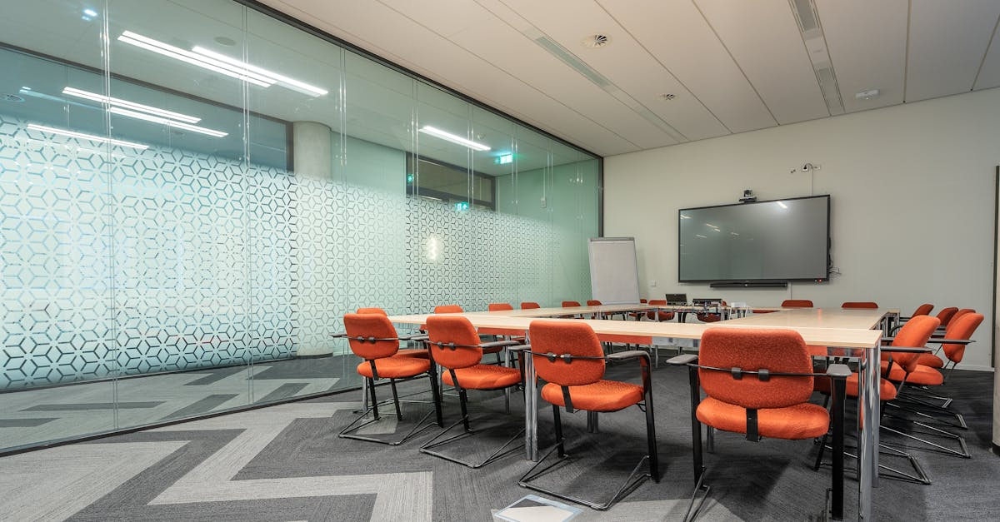

Un départ inattendu qui fait trembler les marchés
L'annonce du retrait des Émirats Arabes Unis (EAU) de l'Organisation des Pays Exportateurs de Pétrole (OPEP), effective dès janvier 2025, a pris le monde de la finance et de l'énergie par surprise. Alors que l'OPEP et ses alliés, réunis au sein de l'OPEP+, tentent de maintenir une stabilité relative sur les marchés pétroliers mondiaux face à une demande fluctuante et à la montée en puissance des énergies renouvelables, cette décision unilatérale d'un membre clé soulève de nombreuses questions. Pourquoi les EAU ont-ils pris une telle décision ? Les raisons invoquées, notamment le désir d'une plus grande flexibilité dans la gestion de leur production pour répondre aux demandes spécifiques de leurs marchés et la volonté de poursuivre une stratégie indépendante axée sur la diversification économique, semblent superficielles au regard des implications potentielles. L'OPEP a longtemps été le pilier de la coordination des politiques pétrolières, influençant directement les prix et les volumes d'approvisionnement mondiaux. Le départ des EAU, l'un des plus grands producteurs du cartel, pourrait bien affaiblir l'influence de l'organisation et introduire une volatilité accrue sur les marchés. Pour les investisseurs, cela signifie une incertitude accrue, nécessitant une analyse plus fine des dynamiques offre-demande et des décisions stratégiques des principaux acteurs. Les marchés actions, notamment ceux liés aux entreprises pétrolières et aux ETF énergétiques, pourraient réagir vivement à ces développements géopolitiques imprévus, rendant la gestion de portefeuille plus complexe.
👉 À lire : Primorsk attaqué : les marchés pétroliers sous haute tension

Les motivations profondes derrière la décision émiratie
Au-delà des déclarations officielles, il est crucial de comprendre les véritables moteurs de cette décision historique. Les Émirats Arabes Unis, bien que riches en hydrocarbures, ont lancé depuis plusieurs années une stratégie ambitieuse de diversification économique, visant à réduire leur dépendance au pétrole. Des investissements massifs dans les technologies, le tourisme, la finance et les énergies renouvelables sont en cours. Dans ce contexte, les contraintes imposées par l'OPEP en matière de quotas de production pourraient être perçues comme un frein à l'optimisation des revenus pétroliers, revenus qui sont essentiels pour financer cette transition. Un expert anonyme proche des cercles décisionnels de Dubaï confie : "Les EAU veulent maximiser la valeur de leurs réserves actuelles, tout en construisant l'économie de demain. L'OPEP, par sa nature conservatrice, ne permet pas toujours cette agilité nécessaire." De plus, les EAU cherchent peut-être à renforcer leur position géopolitique en adoptant une posture plus indépendante, se positionnant comme un acteur clé non seulement dans le Golfe mais aussi sur la scène énergétique mondiale, en dehors des cadres traditionnels. Cette autonomie accrue pourrait leur permettre de conclure des accords bilatéraux plus avantageux ou d'explorer de nouveaux marchés sans avoir à se conformer aux décisions collectives de l'OPEP. Cette stratégie, bien que risquée, pourrait à terme renforcer leur influence et leurs revenus, des éléments cruciaux pour la planification à long terme de leur économie.
👉 À lire : Pétrole : Goldman Sachs revoit ses prévisions, l'IA anticipe
Impact sur la production et les prix du pétrole : l'effet domino
Le retrait des EAU de l'OPEP n'est pas une simple formalité ; il a le potentiel de remodeler l'équilibre mondial de l'offre et de la demande de pétrole. Les EAU, qui produisent environ 3 millions de barils par jour, représentent une part significative de l'offre gérée par l'OPEP. Sans la discipline des quotas, il est possible que ce pays augmente sa production, cherchant à capter davantage de parts de marché, surtout si les prix du brut restent attractifs. Cela pourrait exercer une pression à la baisse sur les prix mondiaux, une perspective qui inquiète les autres membres de l'OPEP, dont les économies dépendent fortement des revenus pétroliers. L'Arabie Saoudite, en particulier, pourrait voir ses efforts pour soutenir les prix sapés par l'augmentation potentielle de la production émiratie. "C'est un pari audacieux des EAU", commente un analyste pétrolier. "Ils misent sur leur capacité à vendre plus, même à un prix potentiellement plus bas, pour compenser la perte de revenus unitaires." Cette situation pourrait déclencher une guerre des prix larvée, ou du moins une instabilité accrue, rendant la prévision des cours du pétrole encore plus complexe. Pour les traders et les investisseurs, cela implique une vigilance accrue sur les annonces de production des EAU et sur les réactions des autres producteurs majeurs. La volatilité des prix du pétrole a des répercussions directes sur les actions des compagnies énergétiques, les coûts de transport et, par extension, sur l'inflation globale.
La réaction des autres membres de l'OPEP et de l'OPEP+
La décision des Émirats Arabes Unis n'a pas manqué de susciter des réactions au sein de l'OPEP et du groupe élargi OPEP+. Si les déclarations officielles restent mesurées, exprimant une forme de compréhension pour les aspirations des EAU, la préoccupation est palpable en coulisses. L'Arabie Saoudite, leader de facto de l'organisation, pourrait se retrouver dans une position délicate. Elle devra décider si elle maintient sa politique de gestion de l'offre pour soutenir les prix, au risque de perdre des parts de marché face à une production émiratie potentiellement accrue, ou si elle réagit en augmentant également sa propre production, déclenchant ainsi une spirale baissière des prix. D'autres membres, comme l'Irak ou le Nigeria, dont les budgets sont particulièrement sensibles aux fluctuations des prix du pétrole, suivront avec attention. Le groupe OPEP+ pourrait perdre une partie de sa crédibilité et de son efficacité s'il ne parvient plus à coordonner les politiques de ses membres majeurs. Les analystes s'attendent à ce que des discussions intenses aient lieu dans les prochains mois pour tenter de contenir les dégats. Certains prévoient une réorganisation informelle des alliances au sein du marché, où les EAU pourraient chercher à nouer des liens plus étroits avec des pays consommateurs ou des producteurs non-OPEP. La cohésion du cartel, déjà mise à rude épreuve par les divergences d'intérêts et les sanctions contre certains membres, pourrait être définitivement fragilisée.
Conséquences pour les marchés financiers mondiaux
L'impact du départ des EAU de l'OPEP dépasse largement le cercle des pays producteurs. Les marchés financiers mondiaux, toujours à l'affût des indicateurs susceptibles de modifier les perspectives économiques, seront particulièrement sensibles à cette nouvelle donne. Une baisse durable des prix du pétrole pourrait avoir des effets contrastés : d'une part, elle réduirait les coûts d'exploitation pour de nombreuses industries et allégerait le fardeau des consommateurs, stimulant potentiellement la croissance économique. D'autre part, elle affecterait négativement les revenus des entreprises du secteur de l'énergie, les majors pétrolières aux géants parapétroliers. Les actions de ces entreprises, souvent des composantes importantes des indices boursiers majeurs, pourraient connaître une période de forte volatilité. Les ETF axés sur l'énergie ou sur les marchés émergents dépendants du pétrole seraient directement touchés. Les marchés obligataires pourraient également réagir, notamment les obligations d'État des pays fortement exportateurs de pétrole. La gestion active des portefeuilles d'actions et d'ETF devient primordiale dans ce contexte. Les algorithmes de trading, capables d'analyser en temps réel une multitude de données géopolitiques et économiques, pourraient offrir un avantage certain pour naviguer dans cette incertitude. L'anticipation des mouvements de prix et la réallocation rapide des actifs seront des facteurs clés de succès pour les investisseurs.

L'avenir des investissements dans le secteur énergétique
La décision des EAU pose des questions fondamentales sur l'avenir des investissements dans le secteur énergétique, traditionnellement dominé par les énergies fossiles. Si la volatilité des prix du pétrole s'intensifie, les investisseurs pourraient être tentés de se détourner des actifs liés aux hydrocarbures, au profit d'alternatives plus stables ou perçues comme plus durables. Les énergies renouvelables, l'hydrogène vert, ou encore les technologies de capture du carbone pourraient bénéficier de cet arbitrage. Cependant, il est prématuré de conclure à la fin de l'ère du pétrole. La demande mondiale d'énergie reste forte, et la transition vers les renouvelables prendra du temps. Les pays comme les EAU, tout en investissant massivement dans la diversification, continueront à exploiter leurs ressources pétrolières pendant encore plusieurs décennies. Ils chercheront probablement à maximiser la valeur de ces actifs dans l'intervalle. Cela pourrait signifier des investissements ciblés dans des technologies d'extraction plus efficaces ou dans des projets pétroliers à faible coût de production. Pour les investisseurs, cela ouvre la voie à des stratégies différenciées : certains pourraient parier sur le déclin à long terme des fossiles, tandis que d'autres pourraient chercher à profiter de la volatilité à court et moyen terme, en se concentrant sur des acteurs capables de s'adapter aux nouvelles réalités du marché. Les indices boursiers intégrant une diversité de sources d'énergie pourraient offrir une meilleure résilience.
Diversification des stratégies : l'IA comme avantage concurrentiel
Dans un environnement de marché aussi incertain et potentiellement volatil, marqué par des décisions géopolitiques majeures comme le départ des EAU de l'OPEP, la nécessité d'adopter des stratégies d'investissement flexibles et réactives devient primordiale. Les approches traditionnelles, basées sur des analyses macroéconomiques lentes et des décisions discrétionnaires, peuvent montrer leurs limites face à la rapidité des changements. C'est là qu'intervient l'intelligence artificielle. Un copilote IA, comme celui proposé par TradePilot AI, peut analyser en temps réel des flux d'informations massifs : données de production, indicateurs économiques mondiaux, actualités géopolitiques, mouvements des marchés financiers, et même le sentiment des investisseurs. En traitant ces données à une vitesse et une échelle impossibles pour un humain, l'IA peut identifier des opportunités de trading, anticiper des mouvements de prix, et exécuter des ordres de manière automatisée, 24h/24. Pour les investisseurs qui cherchent à naviguer dans la complexité des marchés actions, ETF et indices boursiers, particulièrement dans des secteurs sensibles comme l'énergie, une telle technologie offre un avantage concurrentiel indéniable. Elle permet de réagir instantanément aux événements, de gérer les risques de manière proactive, et de saisir des opportunités qui seraient autrement manquées. C'est une réponse concrète à l'imprévisibilité croissante des marchés mondiaux.
Anticiper les prochains mouvements : l'importance de l'analyse prédictive
Le départ des EAU de l'OPEP n'est qu'un exemple parmi d'autres des forces complexes qui façonnent aujourd'hui le paysage énergétique et financier mondial. La transition énergétique, les tensions géopolitiques, les politiques monétaires des grandes banques centrales, et les innovations technologiques sont autant de facteurs qui créent une volatilité structurelle. Dans ce contexte, la capacité à anticiper les prochains mouvements devient un atout majeur pour tout investisseur. Les modèles prédictifs basés sur l'IA excellent dans cet exercice. En analysant des tendances historiques, des corrélations subtiles entre différents actifs, et en intégrant les données en temps réel, ces systèmes peuvent générer des scénarios prospectifs avec une précision accrue. Par exemple, une IA pourrait identifier les secteurs ou les indices boursiers les plus susceptibles de bénéficier ou de souffrir d'une fluctuation des prix du pétrole, ou de changements dans les politiques de production des pays du Golfe. Elle peut également optimiser la construction de portefeuilles diversifiés, en sélectionnant les actions, ETF ou indices les plus pertinents pour atteindre les objectifs de rendement et de risque fixés par l'investisseur. L'objectif n'est pas de prédire l'avenir avec certitude, mais de se positionner de manière optimale face aux différentes probabilités, en minimisant les risques et en maximisant le potentiel de gains. C'est une approche scientifique et data-driven du trading, loin des spéculations impulsives.
Conclusion : Naviguer dans l'incertitude avec un avantage technologique
Le départ des Émirats Arabes Unis de l'OPEP marque une étape potentiellement décisive dans l'évolution du marché mondial de l'énergie. Il introduit une nouvelle couche d'incertitude, susceptible d'accroître la volatilité des prix du pétrole et d'influencer significativement les marchés financiers mondiaux. Pour les investisseurs, cette période complexe exige une vigilance accrue, une analyse approfondie et, surtout, des outils d'investissement performants. Les stratégies traditionnelles pourraient ne plus suffire pour naviguer efficacement dans ce nouvel environnement. L'adoption de technologies avancées, comme celles proposées par TradePilot AI, devient un levier stratégique. Un copilote IA, capable de traiter d'énormes volumes de données en temps réel, d'identifier des schémas complexes et d'exécuter des stratégies de trading automatisées, offre un avantage concurrentiel indéniable. Il permet non seulement de réagir rapidement aux événements, mais aussi d'anticiper les tendances futures avec une précision améliorée. Que vous investissiez dans des actions individuelles, des ETF sectoriels ou des indices boursiers, l'intelligence artificielle peut devenir votre alliée la plus précieuse pour transformer l'incertitude en opportunité. Dans le monde du trading, avoir un copilote IA qui travaille pour vous 24h/24, c'est s'assurer de ne jamais manquer une occasion, peu importe les fluctuations du marché.